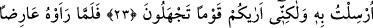

ÂD KAVMİNİN
KARDEŞİNİ HÛD’U AN
21. Âd kavminin kardeşini (Hûd’u) an. Zira o, kendinden önce ve sonra
uyarıcıların da gelip geçtiği Ahkâf bölgesindeki kavmine: Allah’tan başkasına
kulluk etmeyin. Ben sizin büyük bir günün azabına uğramanızdan korkuyorum,
demişti.
22. «Sen bizi tanrılarımızdan çevirmek için mi bize geldin? Hadi, doğru
söyleyenlerden isen, bizi tehdit ettiğin şeyi başımıza getir» dediler.
23. Hûd da! Bilgi ancak Allah’ın katındadır. Ben size, bana gönderilen şeyi
duyuruyorum. Fakat sizin cahil bir kavim olduğunuzu görüyorum, dedi.
24. Nihayet onu, vaadilerine doğru yayılan bir bulut şeklinde görünce: Bu bize
yağmur yağdıracak yaygın bir buluttur, dediler. Hayır! O, sizin acele gelmesini
istediğiniz şeydir. İçinde acı azap bulunan bir rüzgârdır!
25. O (rüzgâr), Rabbinin emriyle her şeyi yıkar, mahveder. Nitekim (o kasırga
gelince) onların evlerinden başka bir şey görülmez oldu. İşte biz suç işleyen
toplumu böyle cezalandırırız.
26. Andolsun ki, onlara da size vermediğimiz kudret ve serveti vermiştik.
Kendilerine kulaklar, gözler ve kalpler vermiştik. Fakat kulakları, gözleri ve
kalpleri kendilerine bir fayda sağlamadı. Zira bile bile Allah’ın âyetlerini inkâr